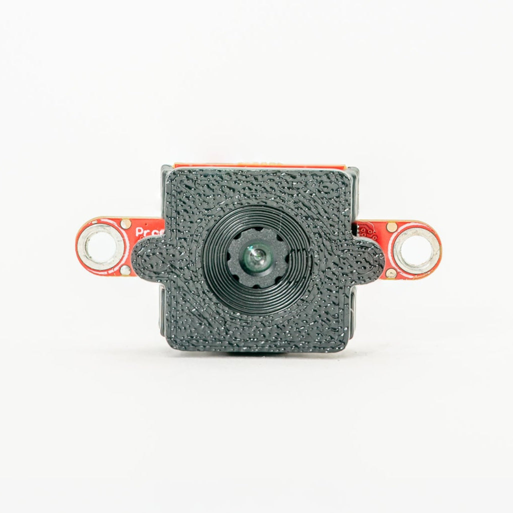

GENX320 Event Camera¶
Il modulo GENX320 Event Camera è un sensore di visione event-based Prophesee con risoluzione 320x320 e precisione temporale dell’ordine dei microsecondi.
{kind=link}

Per il datasheet completo, le foto e gli ordini, consulta la pagina prodotto GENX320 Event Camera.
Nota
Supportato su OpenMV H7 Plus, RT1062 e N6.
In evidenza¶
Sensore di visione event-based 320x320
Gamma dinamica di 140 dB, nessun motion blur
Velocità di output degli istogrammi di eventi superiore a 375 Hz
Il consumo scala con l’attività della scena, partendo da circa 3 mW
Funziona da meno di 5 lux fino alla luce solare intensa senza esposizione automatica
Produce frame in scala di grigi o flussi grezzi di eventi
Utilizzo¶
Il GENX320 è un sensore di visione event-based: invece di leggere l’intera matrice 320x320 su un clock di frame fisso, ogni pixel segnala «eventi» asincroni nell’istante in cui rileva un cambiamento di luminosità. Ogni evento porta con sé una coordinata X/Y, una polarità ON/OFF (da chiaro→scuro o da scuro→chiaro) e un timestamp in microsecondi. È da qui che derivano la precisione temporale del sensore dell’ordine dei microsecondi, l’assenza di motion blur, l’elevatissima gamma dinamica e il consumo proporzionale all’attività. Le scene statiche non generano alcun dato.
Il firmware OpenMV espone il GENX320 tramite csi.CSI con cid= csi.GENX320. Sono disponibili due modalità operative:
Modalità istogramma (predefinita) — gli eventi vengono accumulati on-chip in bin per pixel e segnalati come frame in scala di grigi 320x320 a una velocità configurabile (circa 20-350 FPS). Il sensore si comporta come una camera normale, quindi tutte le routine standard di elaborazione delle immagini (
Image.find_blobs, palette, ecc.) funzionano direttamente.Modalità evento — gli eventi grezzi vengono trasmessi in un
ndarraynumpy con timestamp completi al microsecondo, per applicazioni che necessitano del dettaglio temporale anziché di un frame già suddiviso in bin.
Modalità istogramma¶
In modalità istogramma il GENX320 produce frame in scala di grigi in cui ogni pixel codifica l’attività recente degli eventi in quella posizione. I pixel sopra la luminosità di base sono eventi ON (luminosità in aumento), quelli sotto sono eventi OFF (luminosità in calo). La luminosità di base predefinita è 128 e il passo di contrasto per evento è 16 — aumenta il contrasto per far risaltare gli eventi:
import csi
import time
csi0 = csi.CSI(cid=csi.GENX320)
csi0.reset()
csi0.pixformat(csi.GRAYSCALE)
csi0.framesize((320, 320))
csi0.brightness(128) # baseline (default 128)
csi0.contrast(16) # per-event step
csi0.framerate(50) # 20-350 FPS
clock = time.clock()
while True:
clock.tick()
img = csi0.snapshot()
print(clock.fps())
csi.CSI.brightness, csi.CSI.contrast e csi.CSI.framerate sono le tre manopole che modellano l’output dell’istogramma.
Output colorato¶
Imposta csi.CSI.color_palette su image.PALETTE_EVT_LIGHT per uno sfondo chiaro o su image.PALETTE_EVT_DARK per uno scuro — il driver emette frame RGB565 usando direttamente la palette:
csi0.color_palette(image.PALETTE_EVT_LIGHT)
Calibrazione degli hot-pixel¶
I sensori di eventi accumulano «hot pixel» che scattano in modo spurio. Esegui csi.IOCTL_GENX320_CALIBRATE su una scena statica per disabilitarli. Il driver costruisce un conteggio dei colpi per pixel su una matrice 320x320, calcola la media e la deviazione standard e disabilita ogni pixel il cui conteggio è superiore a mean + sigma * stddev — a quel punto i pixel disabilitati smettono di emettere eventi a livello del sensore.
Due parametri controllano la calibrazione:
event_count— quanti eventi contare prima di calcolare le statistiche. Il ciclo cattura frame finché il totale corrente degli eventi non supera questo budget. Conteggi più alti danno una stima più affidabile a costo di un tempo di calibrazione più lungo.10000è un buon punto di partenza.sigma— moltiplicatore di soglia sulla deviazione standard. Valori più bassi sono più aggressivi (più pixel disabilitati); valori più alti sono più conservativi.0.5è un buon valore predefinito.
Punta prima il sensore verso una scena statica, in modo che eventuali eventi generati dal movimento non vengano conteggiati a carico di pixel che in realtà funzionano correttamente:
csi0.snapshot(time=5000) # let the user steady the camera
disabled = csi0.ioctl(csi.IOCTL_GENX320_CALIBRATE, 10000, 0.5)
print(f"disabled {disabled} hot pixels")
Filtro anti-flicker (AFK)¶
Le sorgenti di luce periodiche (fluorescenti, display a LED) generano enormi quantità di eventi ridondanti. Il filtro AFK rifiuta gli eventi il cui pixel commuta a una frequenza all’interno di una banda — abilitalo tramite csi.IOCTL_GENX320_SET_AFK indicando gli estremi della banda in hertz:
csi0.ioctl(csi.IOCTL_GENX320_SET_AFK, 1, 130, 160) # 130-160 Hz
csi0.ioctl(csi.IOCTL_GENX320_SET_AFK, 0) # disable
Preset di bias¶
Ogni pixel del GenX320 dispone di un front-end analogico con diversi bias configurabili. Insieme governano sensibilità, rumore, larghezza di banda del pixel e velocità degli eventi — la combinazione giusta dipende dalla scena. I singoli bias sono:
DIFF_ON — la soglia di contrasto del comparatore positivo. Un pixel emette un evento ON quando la sua log-illuminazione è aumentata di questa quantità. Più basso = più sensibile alle transizioni verso il chiaro.
DIFF_OFF — la soglia di contrasto del comparatore negativo (la controparte simmetrica per gli eventi OFF). Più basso = più sensibile alle transizioni verso lo scuro.
FO — la frequenza di taglio passa-basso del pixel. Più alta = larghezza di banda del pixel più ampia (risposta più rapida, latenza inferiore) ma maggiore attività di rumore di fondo.
HPF — la frequenza di taglio passa-alto. Più alta = rifiuto più marcato dei cambiamenti lenti di luminosità; solo le transizioni rapide raggiungono i comparatori. Utile per ignorare la deriva ambientale.
REFR — il periodo refrattario. Dopo che un pixel scatta, rimane in reset per questo intervallo prima di poter scattare di nuovo. Più alto = tempo morto più lungo, utile per limitare la velocità degli eventi per pixel.
Dopo csi.CSI.reset il driver applica csi.GENX320_BIASES_LOW_NOISE, non csi.GENX320_BIASES_DEFAULT — i valori predefiniti del datasheet emettono una velocità di eventi di fondo molto più elevata, quindi LOW_NOISE viene usato come punto di partenza per mantenere il flusso silenzioso. Chiama csi.IOCTL_GENX320_SET_BIASES con un preset diverso quando l’applicazione necessita di maggiore sensibilità o larghezza di banda.
csi.IOCTL_GENX320_SET_BIASES applica uno di cinque preset:
csi.GENX320_BIASES_DEFAULT— valori predefiniti del datasheet GenX320. Sensibilità, rumore e larghezza di banda bilanciati per scene generiche.csi.GENX320_BIASES_LOW_LIGHT— entrambe le soglie di contrasto allentate per una maggiore sensibilità, FO abbassato per contenere il rumore e HPF impostato a 0 in modo che i cambiamenti lenti di luminosità vengano comunque registrati — una scena a bassa luminosità genera pochi eventi di per sé, quindi vogliamo farne passare il maggior numero possibile.csi.GENX320_BIASES_ACTIVE_MARKER— ottimizzato per il tracciamento di LED lampeggianti ad alto contrasto. Soglie di contrasto alzate in modo che solo le transizioni nette inneschino eventi; FO e HPF portati al massimo per massimizzare la larghezza di banda del pixel e respingere qualsiasi deriva ambientale lenta; REFR portato a 0 in modo che ogni fronte di lampeggio venga catturato uno dopo l’altro. Il risultato: un flusso composto quasi esclusivamente da fronti dei LED, facile da tracciare.csi.GENX320_BIASES_LOW_NOISE— valore predefinito del driver. Entrambe le soglie di contrasto alzate rispetto aDEFAULT(meno sensibili) e FO abbassato (pixel più lento = pixel più silenzioso). Ideale per scene statiche o lente in cui gli eventi spuri prevarrebbero altrimenti.csi.GENX320_BIASES_HIGH_SPEED— FO aumentato in modo che ogni pixel possa rispondere più velocemente, HPF alzato per respingere la deriva lenta di luminosità e REFR aumentato in modo che un singolo fronte in rapido movimento non saturi la lettura — il tempo morto più lungo mantiene contenuto il volume di eventi sotto movimento intenso.
Sovrascrivi i singoli bias con csi.IOCTL_GENX320_SET_BIAS insieme a uno tra csi.GENX320_BIAS_DIFF_ON, csi.GENX320_BIAS_DIFF_OFF, csi.GENX320_BIAS_FO, csi.GENX320_BIAS_HPF o csi.GENX320_BIAS_REFR e un valore DAC. Ogni bias viene impostato in modo indipendente — scegli un preset come punto di partenza, poi modifica i bias di cui la tua scena ha bisogno:
csi0.ioctl(csi.IOCTL_GENX320_SET_BIASES, csi.GENX320_BIASES_LOW_LIGHT)
csi0.ioctl(csi.IOCTL_GENX320_SET_BIAS, csi.GENX320_BIAS_HPF, 20)
Tracciamento¶
Poiché l’output in modalità istogramma è semplicemente un’immagine in scala di grigi, il normale tracciamento dei blob funziona direttamente. Per tracciare un LED active-marker, carica il preset di bias active-marker e cerca i blob all’estremità chiara dell’istogramma:
import csi
import time
csi0 = csi.CSI(cid=csi.GENX320)
csi0.reset()
csi0.pixformat(csi.GRAYSCALE)
csi0.framesize((320, 320))
csi0.brightness(128)
csi0.contrast(16)
csi0.framerate(200)
csi0.ioctl(csi.IOCTL_GENX320_SET_BIASES, csi.GENX320_BIASES_ACTIVE_MARKER)
clock = time.clock()
while True:
clock.tick()
img = csi0.snapshot()
for blob in img.find_blobs([(120, 140)], invert=True,
pixels_threshold=2, area_threshold=4,
merge=True):
img.draw_detection(blob)
print(clock.fps())
Modalità evento¶
La modalità evento aggira l’istogramma on-chip e trasmette gli eventi grezzi in un ndarray numpy. Ogni evento è una riga di sei colonne uint16:
[0]tipo di evento — vedi sotto[1]timestamp in secondi[2]timestamp in millisecondi[3]timestamp in microsecondi[4]coordinata X, 0-319[5]coordinata Y, 0-319
Il driver emette sei tipi di evento nella colonna [0]:
csi.PIX_OFF_EVENT— un pixel ha rilevato una diminuzione di luminosità (la soglia del comparatoreDIFF_OFFè stata superata). X/Y indicano il pixel che ha scattato.csi.PIX_ON_EVENT— un pixel ha rilevato un aumento di luminosità (la sogliaDIFF_ONè stata superata). X/Y indicano il pixel.csi.EXT_TRIGGER_FALLING— il pin di trigger esterno del sensore ha rilevato un fronte di discesa. X/Y non sono utilizzati.csi.EXT_TRIGGER_RISING— il pin di trigger esterno del sensore ha rilevato un fronte di salita. X/Y non sono utilizzati.csi.RST_TRIGGER_FALLING— trigger di reset dei pixel, fronte di discesa. X/Y non sono utilizzati. Al momento non viene generato dal firmware.csi.RST_TRIGGER_RISING— trigger di reset dei pixel, fronte di salita. X/Y non sono utilizzati. Al momento non viene generato dal firmware.
L’ingresso di trigger esterno del GENX320 è collegato alla linea di frame-sync della camera, che è instradata anche al P10 sia sul processore sia sul pin header — pilota P10 per iniettare fronti di sincronizzazione nel flusso di eventi e rilevarli come eventi EXT_TRIGGER_RISING / EXT_TRIGGER_FALLING insieme ai dati dei pixel.
La maggior parte delle applicazioni si interessa solo di PIX_OFF_EVENT e PIX_ON_EVENT; i tipi di trigger ti permettono di correlare gli eventi con segnali di temporizzazione esterni.
Alloca il buffer degli eventi con forma (EVT_res, 6) dove EVT_res è una potenza di due compresa tra 1024 e 65536, poi entra in modalità evento tramite csi.IOCTL_GENX320_SET_MODE con csi.GENX320_MODE_EVENT e la dimensione del buffer. Leggi gli eventi con csi.IOCTL_GENX320_READ_EVENTS, che riempie il buffer fino alla sua capacità e restituisce il numero di righe valide.
Image.draw_event_histogram rasterizza gli eventi in un’immagine in scala di grigi — per ogni evento ON aggiunge contrast al bin; per ogni evento OFF lo sottrae. clear=True reimposta prima l’immagine su brightness; clear=False accumula su molte chiamate:
import csi
import image
import time
from ulab import numpy as np
img = image.Image(320, 320, image.GRAYSCALE)
events = np.zeros((2048, 6), dtype=np.uint16)
csi0 = csi.CSI(cid=csi.GENX320)
csi0.reset()
csi0.ioctl(csi.IOCTL_GENX320_SET_MODE, csi.GENX320_MODE_EVENT, events.shape[0])
clock = time.clock()
while True:
clock.tick()
n = csi0.ioctl(csi.IOCTL_GENX320_READ_EVENTS, events)
img.draw_event_histogram(events[:n], clear=True, brightness=128, contrast=64)
img.flush()
print(n, clock.fps())
I preset di bias della modalità istogramma, il filtro AFK e gli ioctl di calibrazione degli hot-pixel funzionano tutti allo stesso modo in modalità evento — chiamali dopo csi.IOCTL_GENX320_SET_MODE.
Filtraggio per polarità¶
Esegui lo slicing dell’array di eventi con ulab per mantenere solo gli eventi ON (movimento verso uno stato più luminoso) o solo gli eventi OFF:
TARGET = csi.PIX_ON_EVENT # or csi.PIX_OFF_EVENT
events_slice = events[:n]
indices = np.nonzero(events_slice[:, 0] == TARGET)[0]
if len(indices):
target_events = np.take(events_slice, indices, axis=0)
img.draw_event_histogram(target_events, clear=True,
brightness=128, contrast=64)
Accumulo a lunga esposizione¶
Imposta clear=False per continuare ad accumulare eventi nella stessa immagine su molti frame — il risultato è una visualizzazione delle scie di movimento. Reimposta periodicamente per iniziare una nuova esposizione:
EXPOSURE_FRAMES = 30
i = 0
while True:
n = csi0.ioctl(csi.IOCTL_GENX320_READ_EVENTS, events)
clear = (i % EXPOSURE_FRAMES) == 0
img.draw_event_histogram(events[:n], clear=clear, brightness=128, contrast=64)
img.flush()
i += 1
Elaborazione ad alta velocità¶
Elimina la visualizzazione per liberare la CPU per l’elaborazione degli eventi. Stampa le statistiche solo a ogni N-esima iterazione — eseguire una stampa a ogni iterazione diventa il collo di bottiglia a velocità di eventi elevate:
csi0 = csi.CSI(cid=csi.GENX320)
csi0.reset()
csi0.ioctl(csi.IOCTL_GENX320_SET_MODE, csi.GENX320_MODE_EVENT, events.shape[0])
clock = time.clock()
i = 0
while True:
clock.tick()
n = csi0.ioctl(csi.IOCTL_GENX320_READ_EVENTS, events)
i += 1
if not i % 10:
print(f"{n} events {clock.fps()} fps")
Filtro spazio-temporale di contrasto (STC)¶
Un vero fronte di contrasto in movimento tende a innescare un burst rumoroso di eventi sullo stesso pixel entro una breve finestra temporale — il mismatch dei pixel e il rumore analogico producono eventi extra attorno alla transizione genuina che non sono utili all’applicazione. Il filtro STC è una post-elaborazione on-chip che mantiene solo uno (o pochi) eventi per burst e scarta il resto.
Implementa tre strategie, selezionabili tramite csi.IOCTL_GENX320_SET_STC e una costante GENX320_STC_*. Ogni modalità è definita da quali eventi inoltra da un burst:
Modalità |
Mantiene |
Scarta |
|---|---|---|
ogni evento |
nulla |
|
secondo evento di un burst |
primo evento + eventi successivi |
|
primo evento di un burst |
eventi successivi |
|
primo fronte + fronti successivi |
solo rumore ridondante |
In dettaglio:
csi.GENX320_STC_DISABLE— filtro disattivato, ogni evento passa (predefinito).csi.GENX320_STC_ONLY— mantiene il secondo evento di un burst. Parametro:stc_threshold(ms). Se un nuovo evento su un pixel arriva entrostc_thresholdda un evento precedente, viene considerato il «secondo» di un burst e viene inoltrato — il primo evento e tutti gli eventi successivi nello stesso burst vengono filtrati. Ideale quando si desidera una transizione confermata dal rumore anziché il primissimo colpo.csi.GENX320_STC_TRAIL_ONLY— mantiene il primo evento di un burst. Parametro:trail_threshold(ms). Dopo che un pixel scatta, gli eventi successivi sullo stesso pixel vengono scartati finché non è trascorsotrail_threshold. Preserva la temporizzazione precisa del fronte iniziale — utile quando il momento del cambio di polarità conta più della conferma del burst.csi.GENX320_STC_TRAIL— combina entrambi. Parametri:stc_thresholdetrail_threshold(entrambi in ms). Mantiene il fronte iniziale come in modalità Trail più i fronti successivi come in modalità STC, in modo che più eventi di un burst passino comunque — throughput di eventi più elevato rispetto ai filtri a modalità singola ma con il segnale più ricco.
Le due soglie devono rimanere entro un rapporto di circa 13:1 — il sensore rifiuta le configurazioni in cui una è più di circa 13 volte l’altra:
csi0.ioctl(csi.IOCTL_GENX320_SET_STC, csi.GENX320_STC_TRAIL, 1, 2)
csi0.ioctl(csi.IOCTL_GENX320_SET_STC, csi.GENX320_STC_DISABLE)
Profondità del buffer¶
Quando le velocità degli eventi aumentano bruscamente, la pipeline a triplo buffer predefinita privilegia il frame più recente e scarta quelli vecchi. Aumenta la profondità della FIFO tramite csi.CSI.framebuffers per accodare gli eventi — a costo di elaborare dati leggermente più vecchi quando l’host rimane indietro:
csi0.framebuffers(10) # FIFO depth, > 3 enables queueing
Streaming e visualizzazione su desktop¶
Per la visualizzazione GUI in tempo reale su un PC host, lo strumento GenX320 Event Streaming nel repository openmv-projects abbina la camera a un front-end DearPyGui. La GUI del PC esegue due visualizzazioni affiancate: un canvas di accumulo eventi (stessa idea di Image.draw_event_histogram ma con palette selezionabili e modalità a finestra scorrevole vs. auto-clear) e una mappa di frequenza per pixel pilotata da un filtro passa-banda IIR — utile per individuare segnali periodici (ventole rotanti, LED lampeggianti, ecc.) direttamente nel flusso di eventi.
Include due script di streaming on-cam:
Modalità elaborata (
genx320_event_mode_streaming_on_cam.py) — la camera decodifica gli eventi concsi.IOCTL_GENX320_READ_EVENTSe trasmette ogni riga come 12 byte su USB ([0]tipo,[1]sec,[2]ms,[3]us,[4]x,[5]y). Facile da consumare sul PC perché il formato sul filo corrisponde al formato ndarray on-cam.Modalità grezza (
genx320_raw_event_mode_streaming_on_cam.py) — la camera trasmette le parole di evento native a 32 bit compattate del chip tramitecsi.IOCTL_GENX320_READ_EVENTS_RAW. Sono 4 byte per evento contro i 12 della modalità elaborata (circa 3 volte meno dati su USB), quindi una velocità di eventi ottenibile circa 3 volte superiore quando il collo di bottiglia è il collegamento. Il PC decodifica le parole compattate riportandole allo stesso layout di eventi a 6 colonne usando numpy vettorizzato, quindi il codice del visualizzatore a valle è identico.
La modalità grezza è quella predefinita nella GUI perché il throughput USB è il vincolo determinante alle velocità che il GenX320 può produrre; passa alla modalità elaborata se devi inserire logica di elaborazione nello script on-cam.